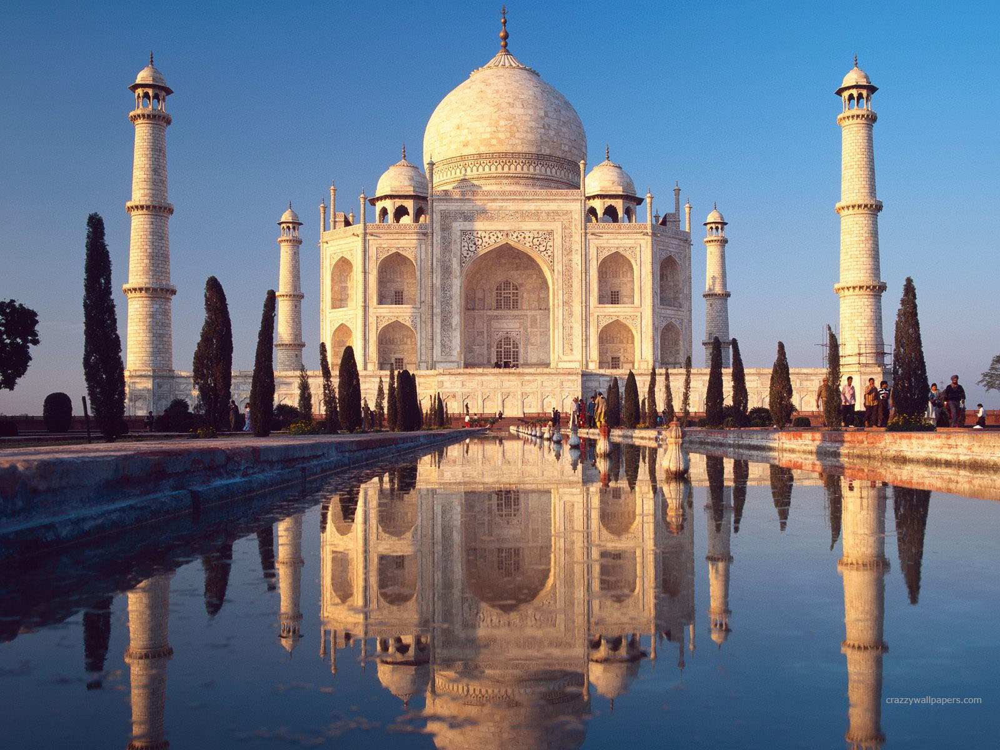
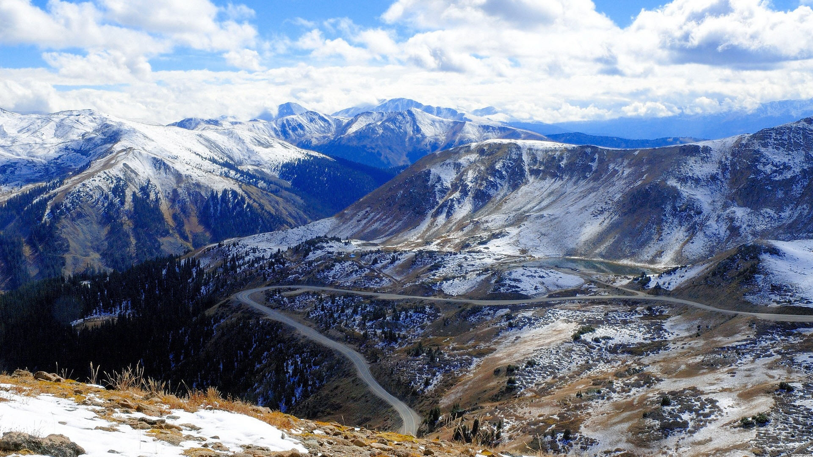

India is a country in South Asia. It is the seventh largest country by area, the second-most populous country with over 1.2 billion people, and the largest democracy in the world. India ia a federal constitutional republic governed under a parliamentry system consisting of 29 states and 7 union territories.
Ancient Indian ArchitectureIndia is famous for being one of the most ancient civilization centers of the world. Second, India is renowned worldwide for its many gods and their rich history and influence on life, even in modern times. Third, the scenic beauty of India's landscape attracts millions of tourists to the country annually. It also boasts hundreds of ancient and modern temples and shrines that intrigue visitors to the subcontinent.
In addition to the many temples, gods and scenic landscapes, India is famous for its spices, the Kashmir region, grand weddings, festivals, dances, Indian cuisine, Bollywood and the Taj Mahal, according to Spot On Lists. Since historical time, India's spices have attracted droves of people into the country, starting with the entrance of British traders searching for spices for exchange, and countries such as China, Singapore and the United States still have a large demand for India's spices.
Message
| Hindi | Bengali | Gujarati | Marathi |
| Tamil | Urdu | Tamil | Kannada |
| Malayalam | Punjabi | Odia | Assamese |
Furthermore, the gigantic and curved temples and gods of India continue to make it a famous and likable place. India's diversity, as evidenced by the many cultural festivals conducted in the country, also makes it special and famous. The multiculturalism for which India is known is also evidenced by its many wedding and dolance styles and festivals.
Most Celebrated Festivals of India

Click Me and See the Magic!!!!
Map of India is a link to a page an image.
Flag of India Image
{kind=link}
{kind=link}